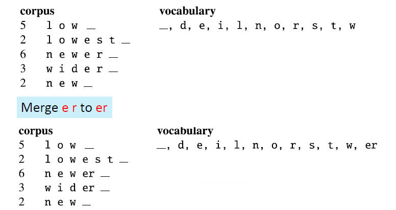
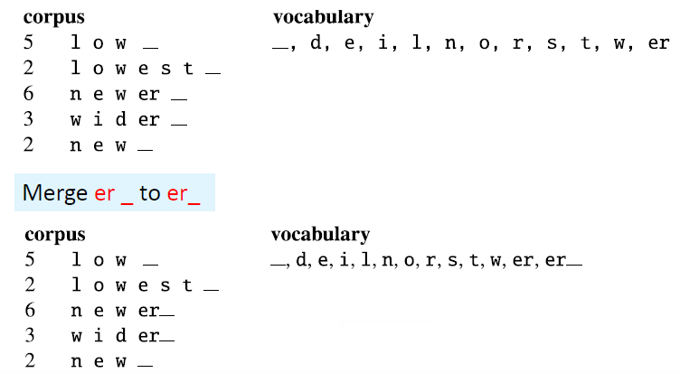
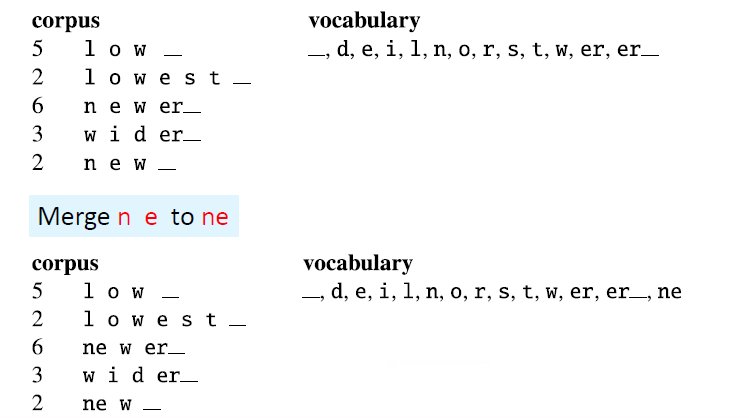
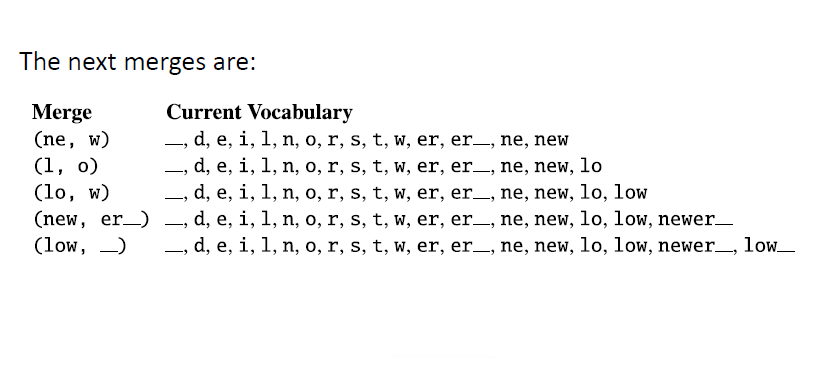

(一)Introduction and Tokenization
本文最后更新于：6 months ago
Introduction
自然语言处理（Natural language processing，NLP）是语言学、计算机科学和人工智能的一个分支领域，研究计算机与人类语言之间的关系、相互作用，特别是如何编程计算机来处理和分析自然语言数据。
目标：使计算机能够理解文本的内容，包括上下文之间的细微差别(contextual nuances)

NLP的一些难题
Difficulty 1: Ambiguty
- Lexical ambiguity：词汇歧义——门把手弄坏了
- Part-of-speech ambiguity：词性歧义——Time flies like an arrow.
- Structural ambiguity：结构歧义——关于鲁迅的文章 。
Difficulty 2: unknown language phenomena
- 新的术语、人名、地名——裸退、非典
- 新的含义——苹果、凡尔赛
- 新的语法——百度一下、Google it
NLP的应用场景
- Information Retrieval：百度、Google、Bing
- Text Generation :九歌——人工智能诗歌写作系统
- Machine Translation：百度翻译、谷歌翻译
- Question Answering & Dialogue Systems：天猫精灵、小度
- Knowledge Graph
- Automatic Summarization
- Sentiment Analysis
- …
Corpora
corpora语料库，是可以是单个文档或多个文档的集合
一个text是由这些组成的：
- 特定的作者
- 特定的事件
- 特定的类型
- 特定的语言
- 特定的功能
语言不是凭空出现的，所以我们需要语料库来进行学习。
Text Normalization
所有自然语言处理都涉及到文本的规范化：
- Tokenizing words
- Normalizing word formats
- Segmenting sentences
Tokenization
简单的方法：
- 根据space characters来划分
使用Unix/Linux的工具来进行space-based tokenization
tr -sc ’A Za z’ ’ n’ < shakes.txt | head
tr ‘A Z’ ‘a z ’ < shakes.txt | tr sc ‘A Za z’ ‘ n’ | sort | uniq c
tr ‘A Z’ ‘a z ’ < shakes.txt | tr sc ‘A Za z’ ‘ n’ | sort | uniq c | sort n r- 当然，不能仅仅依靠标点符号来划分

- 还有很多语言，比如说中文和日文是不使用空格来分隔单词的，那么又该如何划分呢？

- 使用数据来进行划分
常用算法有：
- Byte Pair Encoding (BPE)
- Unigram language modeling tokenization
- WordPiece (Schuster and Nakajima,
它们都具有两个部分：
- token learner：以一套原始的语料库进行学习并生成一个词汇表
- token segmenter：根据词汇表来对一个测试句子进行划分
BPE token learner
基本步骤：
- 词汇表记录所有的单独的字符
- 循环：
- 选择两个在训练语料库中出现频率最高的相邻符号（say ‘A’,’B’）
- 将一个新的’AB’加入词汇表
- 取代所有相邻的’A’和’B’
- 直到有k个合并完成
由于大部分subword算法都是基于空格的划分，所以我们常常先向词汇表加入一个符号’_’
例子




Normalizing word formats
- U.S.A. or USA
- uhhuh or uh-huh
- Fed or fed
- am, is, be, are
Lemmatization：转换为lemma词根
Stemming：将单词后缀删去，化繁为简
小项目
使用python进行网页的爬取、分词、写入excel表格。
URL: https://news.ifeng.com/c/89TNORdIths
Crawler: www.topcoder.com/thrive/articles/web crawler in python
Chinese word tokenization: https://github.com/fxsjy/jieba
总体来说不算难，根据爬虫和结巴两个包的示范代码，进行稍微的修改就可以实现了。
代码：
import requests
import lxml
from bs4 import BeautifulSoup
from xlwt import *
import jieba
workbook = Workbook(encoding = 'utf-8')
table = workbook.add_sheet('data')
table.write(0, 0, 'URL')
table.write(0, 1, 'Title')
table.write(0, 2, 'Content')
url = "https://news.ifeng.com/c/89TNORdIths"
headers = {
'User-Agent': 'Mozilla/5.0 (Windows NT 10.0; Win64; x64) AppleWebKit/537.36 (KHTML, like Gecko) Chrome/93.0.4577.82 Safari/537.36'
}
f = requests.get(url, headers = headers)
#开始获取html
soup = BeautifulSoup(f.content, 'lxml')
#往excel写入URL
table.write(1, 0, url)
#获取标题
heading = soup.find('h1', {
'class': 'topic-2Eq5D0Zm'
})
head_list = jieba.cut(heading.string.strip('<h1>'), cut_all=False)
token_heading = "/ ".join(head_list)
print(token_heading)
table.write(1, 1, token_heading)
#获取文章
article = ""
paragraphs = soup.find('div', {
'class': 'main_content-28C-Fj2p'
}).find_all('p')
num = 0
for paragraph in paragraphs:
article = article + paragraph.string.strip('<p>')
seg_list = jieba.cut(article, cut_all=False)
token_article = "/ ".join(seg_list)
print(token_article)
table.write(1, 2, token_article)
workbook.save('text_token.xls')运行结果：

本博客所有文章除特别声明外，均采用 CC BY-SA 4.0 协议 ，转载请注明出处！